塑身衣有没有效果？选对很重要!!!
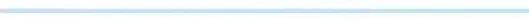
为了大家能买到高性价比的塑身衣
本期的小妹牺牲很大啊
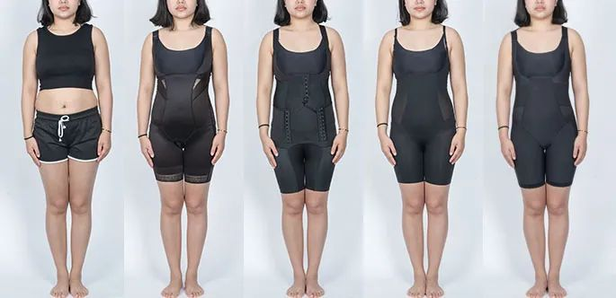
oh，my god！

”塑身衣，太神奇了“
但是真的有塑形效果吗？
如果有，怎样的塑身衣更适合穿着呢？
大麦决定做一起深度测评
为宝宝们解开疑团
大麦选品,一向高标准
大麦通过后台投票，
精选出8款销量MAX的塑身衣，
不但涵盖欧美名品和国产大牌，
更是从“高销量、高评价、高价格”标准下选出来。
所以本期测评
干货满满，值得收藏！
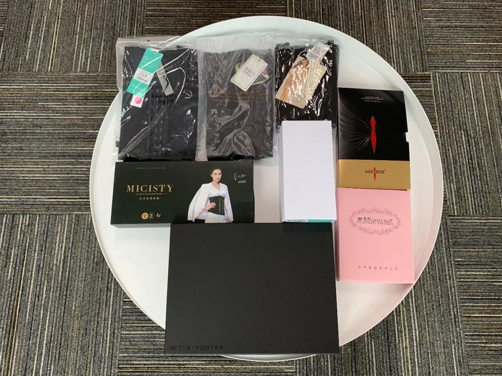
*本次测评塑身衣全家福
按照惯例，我们先给大家搭个楼梯
【科学实验室】
【深度试衣间】
【终极体验营】
（懒得看过程的宝宝可以直接看【深度试衣间】~）
NO.1 好的面料会透气
大麦Tips:透气性在一定程度上
决定了塑身衣的舒适度。
透气度越高越适合!
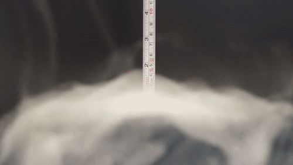
评分标准：分值为0-5分。透气高度<3cm为0分，
透气高度>7cm为5分。
NO.2 好面料弹力科学
大麦Tips: 塑身衣并不是越紧越好，
如果弹力过大会影响正常呼吸!
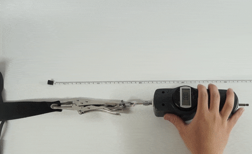
评分标准：x、y分别为肩带和腰围所需拉力值。
总拉力值=0.6x+0.4y，根据该值计0-5分，
＜30N计0分，≥60N计4分。
NO.3 好面料不褪色
大麦Tips: 塑身衣属于贴身衣服，
掉色还有可能引起皮肤过敏!
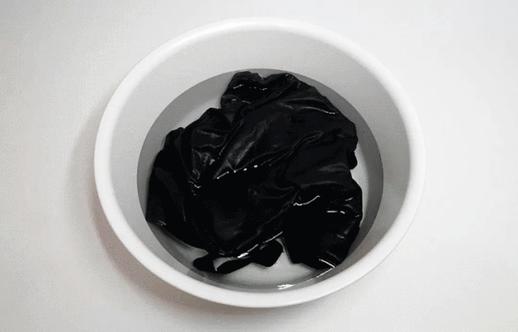
评分标准：观察是否有褪色？水是否清澈有杂质漂浮？
测试结果分值为0（差）-3（好）分。
NO.4 好面料不起球
大麦Tips:面料起球严重会影响穿着舒适度，
而且会破坏塑身衣的塑型效果。
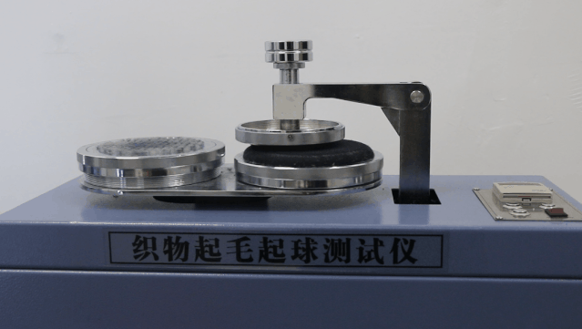
评分标准：等级为1-5级，1级最差（起毛/起球最严重），
5级最好（表面基本无变化）。
为了得出更直观的结果，
我们分别对参与实验的8款塑身衣进行了评分，
惊讶发现居然有一半的选品没有通过！
下面就是我们的实验评分结果
▼
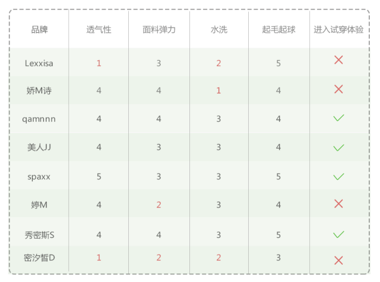
*以上数据标准参考均来自中纺标（北京）检测机构
好，实验结束，下面进入期待已久的
真人试穿体验！

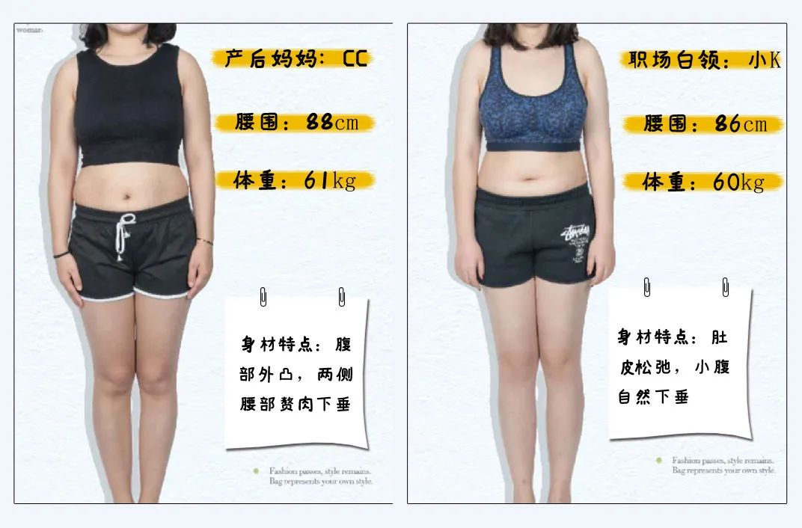
好了好了，接下来请紧跟我们的脚步站稳坐好，
“深度试衣间”正式拉开帷幕，
一起来看看她们身上有没有自己的影子？
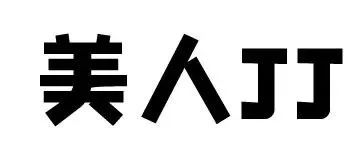
▼
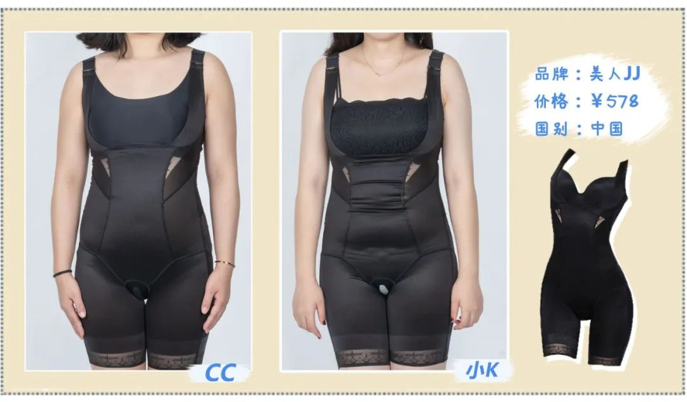
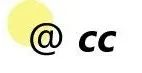
“
肚腩还是一坨的摸得到，没有太明显的变化，裤裆总想往下扯。”
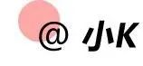
"收腹效果很一般，肚腩会明显挤出来，看起来好丑哦。”
小麦我再仔细看看图片，
确实像她们所说
收腹效果很差！差！差！
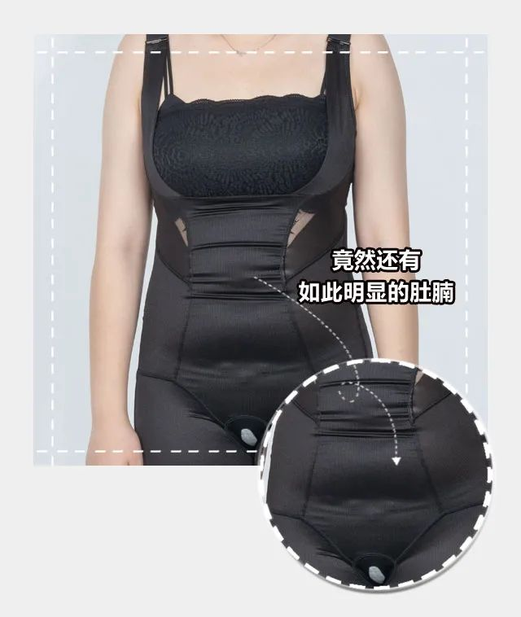
肚子的肉肉居然分了几截，
直接淘
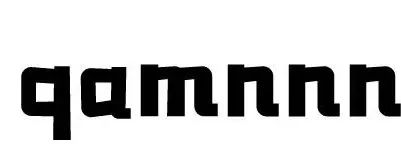
▼
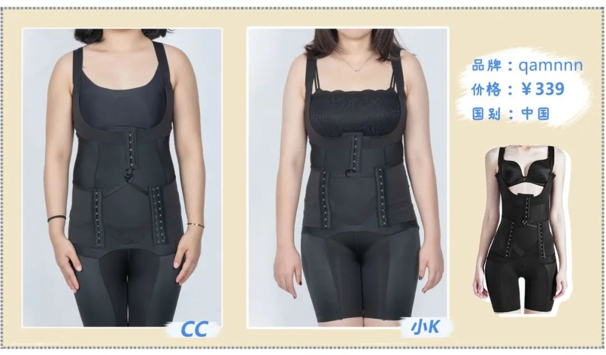
“穿着较麻烦，排扣多，坐下时需要挺直腰才好呼吸。”
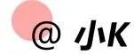
“盆骨位置会束得比较紧，坐久了排扣会勒紧胃部不舒服。”
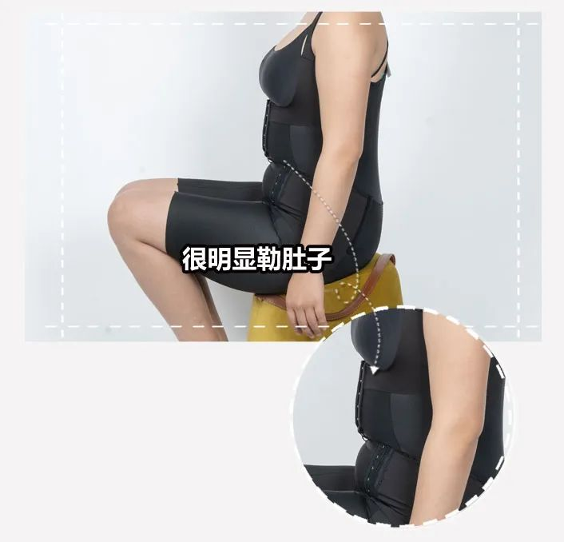
这样勒着影响正常消化，
坐下时候尤其明显
淘汰
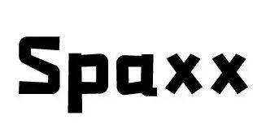
▼
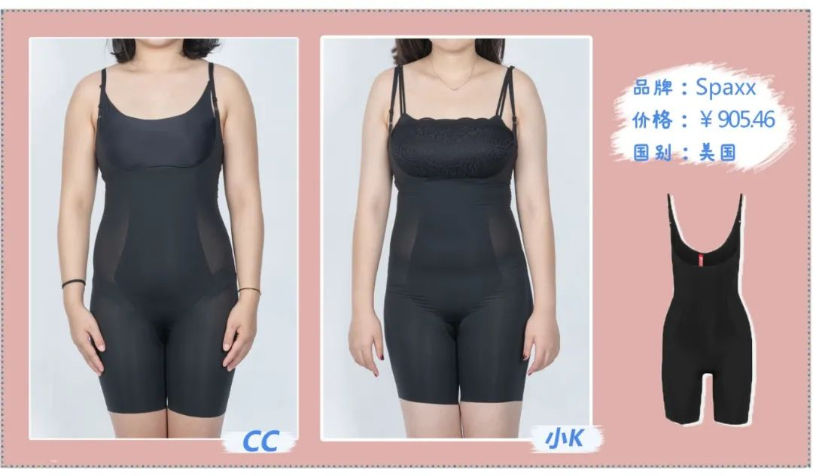
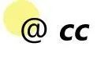
“ 臀部的提拉出色，面料够薄很舒服，腰收得还可以。”
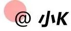
“感觉较舒适，细肩带方便搭配衣服，提臀效果很明显。”
▼
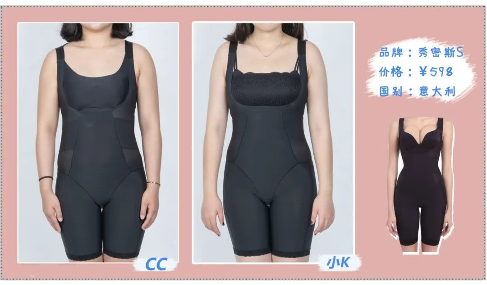
“能够把小腹松弛的肉都集中包裹，塑型效果满意。”
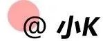
“ 可以把腰和臀修饰得很紧实，可调节肩带很舒服。”
看来只有SPAXX和秀密斯S能获得两位青睐，
下面我们再以产后妈妈CC为代表，
测量其穿衣后的实际腰围。
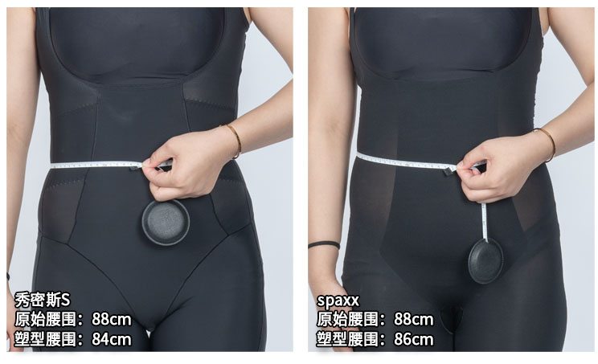
在相同的条件下，
秀密斯S测出的腰围塑型数值很惊艳
穿前穿后相差4cm，
相当平时的衣服从XL码直接改穿L码。
大麦感觉
穿衣量腰围还不够过瘾
决定加设【终极体验营】
继续为大家来点更刺激的
我们让CC和小K坚持8周穿上
秀密斯S（每天6小时）深度塑型，
在第8周揭晓脱下塑身衣后的瘦身结果。
.
.
不要掉队啦！大麦马上带大家入营探秘
......
我们首先来看看产后妈妈CC
8周后的蜕变成果，
此处应该有掌声！
CC跟我说
“穿秀密斯S这8周除了塑型的变化外，
发现穿塑身衣带孩子更舒服，
腰痛也得到缓解。”
自己比以前更爱笑，更自信了。
再来看看职场白领小K
是否也有同样的蜕变效果，
Wow!Wow！
真的吗？
腰腹部都瘦下来了耶！
小K说“已经好久没见过自己的腰，
以前只敢穿宽松的衣服，
瘦下来后穿啥都美.”
人变自信做起事来也更有干劲了。
看到两位的蜕变，我也替她们高兴。
再看看最近长胖的自己，
该给自己备一件秀密斯S了。
{{secitm.sec_name}}
{{secitm.sec_comment_content}}
{{secitm.sec_comment_count}}